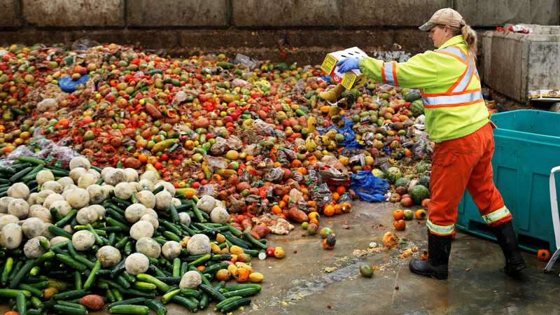

A
ONU mostra que o Brasil desperdiça a cerca de
27 milhões de toneladas de alimentos por ano.

O desperdício de alimentos acontece muito nas colheitas, transporte, comércios, casas e etc.
Toneladas de alimentos são jogados no lixo em função de sua alta perecibilidade, condições inadequadas de embalagem, manuseio e armazenamento.
É muito grave. Temos que nos comprometer bastante nesses assuntos, mas vejo muitas pessoas brincando ou jogando fora os alimentos. Para isso, temos que conscientizar as pessoas sobre esses problemas para tentar controlar a falta de alimentos do mundo.
Como é o desperdício de alimentos nas escolas públicas
Nas escolas públicas do município de Umuarama vemos muito desperdício de comida, inclusive tem um lugar onde você coloca o resto de merenda e sempre está cheio. Isso incentiva os alunos a jogarem fora e não poderia existir esse espaço.
Plano de intervenção para a escola
Um plano de intervenção é implantar um sistema de buffet onde os alunos se servem na quantiade adequada evitando assim o desperdício, paralelo a isso realizar também uma campanha de conscientização com cartazes e palestras com profissionais.
Reaproveitar os restos de comida
- Os resíduos alimentares podem ser convertidos em ração animal e reutilizados na indústria pecuária.
- Os resíduos alimentares podem ser convertidos em adubos e reutitizados pelos agricultores.
- Podem ser utilizado para óleos e gorduras.
- Podem ser usados para produção de gás metano, que por sua vez pode ser usado na produção de energia elétrica.



Como evitar desperdício de alimentos
- Fazer uma lista de compras
- Verificar o vencimento dos produtos
- Aumentar a periodicidade das compras
- Não comprar muitos produtos nas promoções
- Acondicionar os alimentos corretamente
- Usar as partes dos alimentos que costumam ser decartadas
- Usar sobras para fazer novos pratos
Questões ambientais
Além da fome e da subnutrição devido à escassez de alimentos, há uma série de outras questões que também são relevantes.
Por exemplo, pode ser derivado de problemas ambientais como a falta de aterros, o aumento dos custos de eliminação de resíduos e das emissões de CO2 provenientes da incineração e da eliminação de aterros.
Por esse motivo, evitar o desperdício de alimentos é fundamental para criar hábitos mais sustentáveis, não só para cuidar do planeta, como também para criar uma conscientização a respeito dos problemas relacionados à fome.
Conclusão
Nos dados de UNEP Food Waste Index Report 2021 (índice de desperdício de alimentos), os países que mais tem desperdícios são:
- China
- Índia
- Nigéria
- Indonésia
- Estados Unidos
- Paquistão
- Brasil
O Brasil no momento está em 7º lugar, mas ainda precisamos melhorar muito, pois com essas pequenas mudanças, podemos melhorar de pouco a pouco o nosso futuro para as próximas gerações.